| 日付 | 2014年12月28日（日） - 2014年12月31日（水） | ||
|---|---|---|---|
| 山域 | 四国の山 | ||
| メンバー | 家族（妻、長女・3歳、長男・1歳） | ||
| 山行形態 | 子連れ3泊4日ホテル泊 | ||
| アクセス | 車、船 | ||
| ルート (Map) |
|
今年の冬休みも昨年同様、帰省ついでに旅行をすることにする。
妻が四国に行ってみたいと言っていたので、前から行ってみたかった小豆島に行くことにする。
厳密にいうと小豆島は四国本土ではないが、四国地方の一部なのでまあ良いだろう。
1日目
本日の宿は小豆島でとっているため、絶対に船に乗り遅れるわけにはいかない。
朝の4:30に自宅を出発。幸い帰省ラッシュに巻き込まれることはなく、
予定より早い時間に到着することができた。
船の時間まで少し余裕があるので、日生港の近くにある旧閑谷学校に行ってみる。
1673年に開館した、日本最古の庶民学校として知られている。
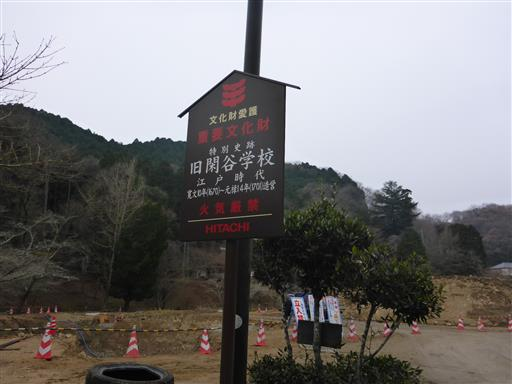
泮池を渡る。何とこの池は重要文化財に指定されている。
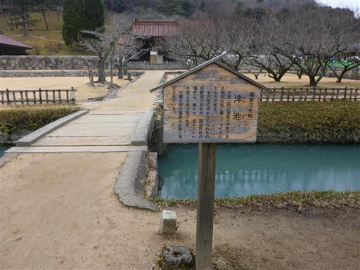
青白い不思議な色をした池だ。
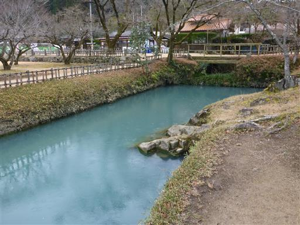
立派な公門。封鎖されていてこの門は通ることができない。
観光客は側にある小さな門から入場する。
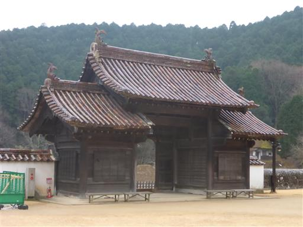
講堂。1701年に完成した建物で、当時と変わらない姿を留めている。
この講堂は国宝に指定されている。
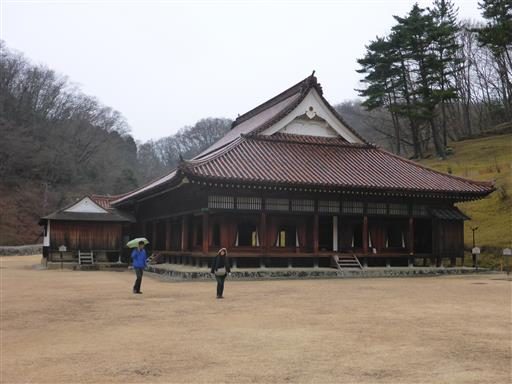
どっしりとした、いかにも頑丈そうな建物だ。
300年以上、壊れなかっただけのことはある。
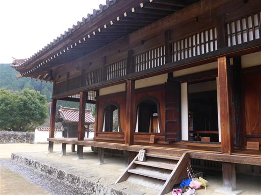
この中で教育が行われた。
雨が降っていてとにかく寒い。冬は震えながら勉強していたのだろうか？
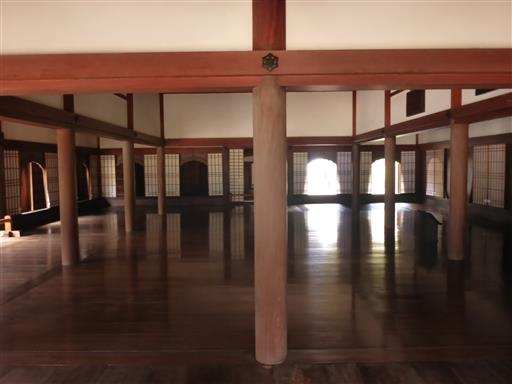
周りを廊下が取り囲んでいる。
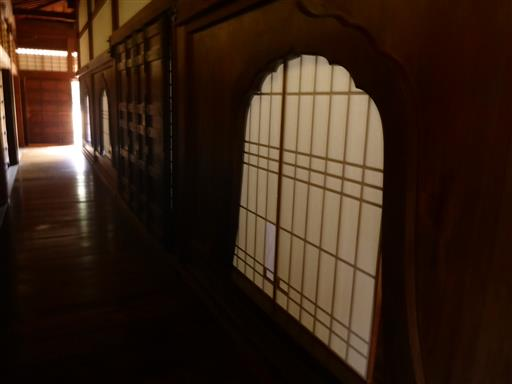
奥の方に囲炉裏がある。ここで暖を取っていたのだろう。
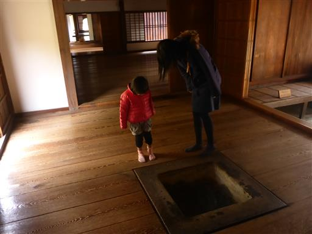
校内には閑谷神社や聖廟なども建っている。
雨の中、傘をさして一巡りする。

楷の木。孔子にゆかりのある木らしい。
楷の木の葉を挟んだしおりをお土産に買う。
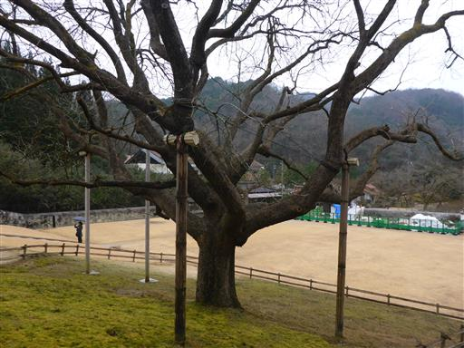
校内は石塀で囲まれている。
非常に美しい形をしているので、最近造られた物かと思ったら、講堂と同時期に造られたものらしい。
全長765mで、重要文化財に指定されている。
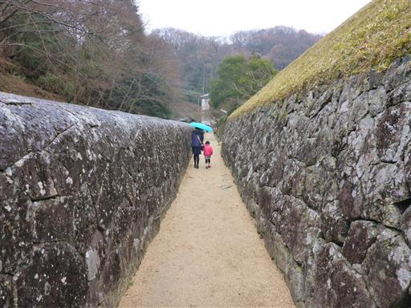
こちらは資料館。1905年築の建物で当時は中学校の校舎だった。
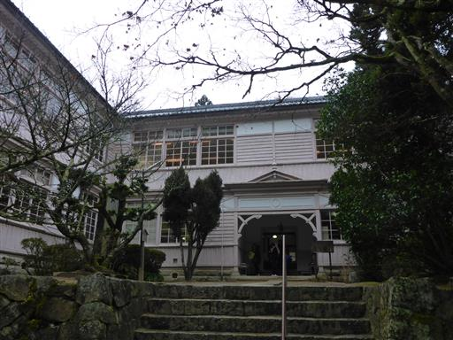
中には閑谷学校に関する資料が展示されている。
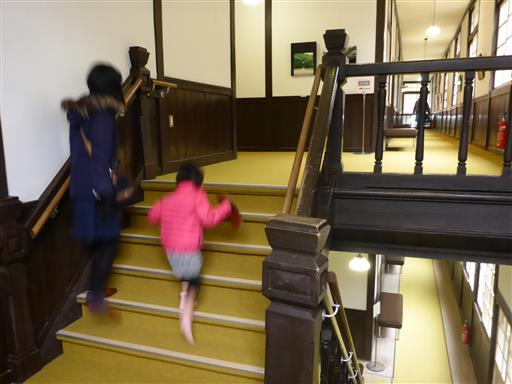
造りは昔通っていた小学校と似ていて、懐かしい感じがする。
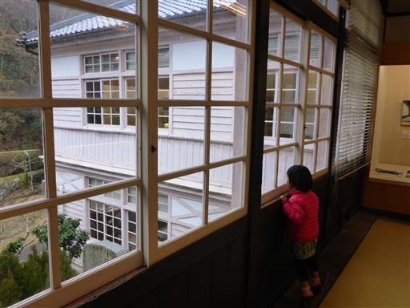
閑谷学校の見学を終えたら、日生港に向かう。
日生港の周辺を少しうろつくが、特に見るべきものはない。
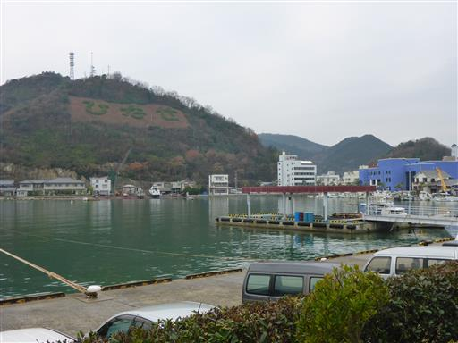
乗船。後から来た観光バスが先に乗船したため、
窓際の良い席は全てバス観光客に占められている…
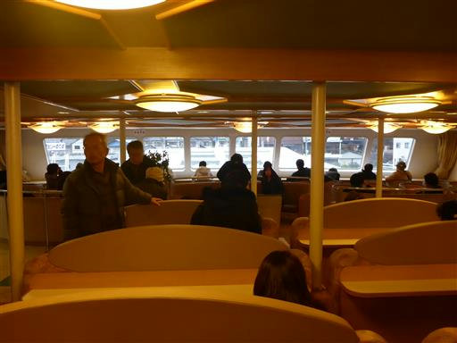
息子はずっと階段を上ったり下りたりして遊んでいる。
付き合うのも大変だ。
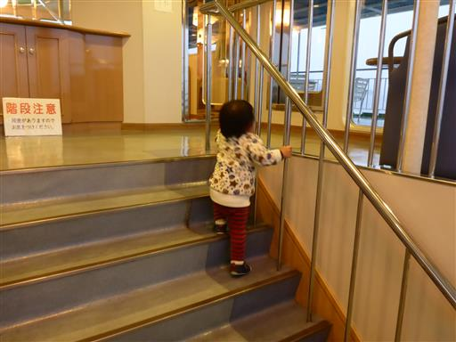
船の甲板が好きなのだが、雨が降っていてものすごく寒い。
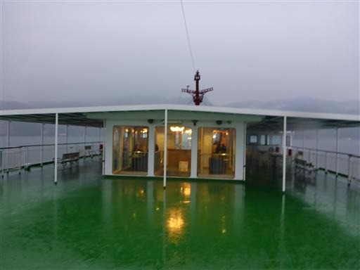
景色も霞んでいる。目的地の小豆島は全く見えない。
すぐ室内に退散する。小豆島に到着し、ホテルに着いた時には、もう辺りは暗くなり始めていた。
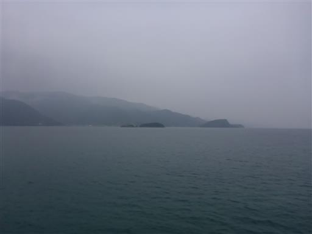